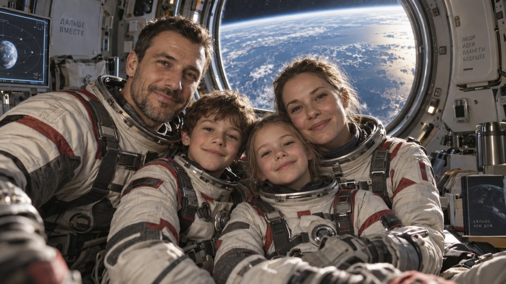
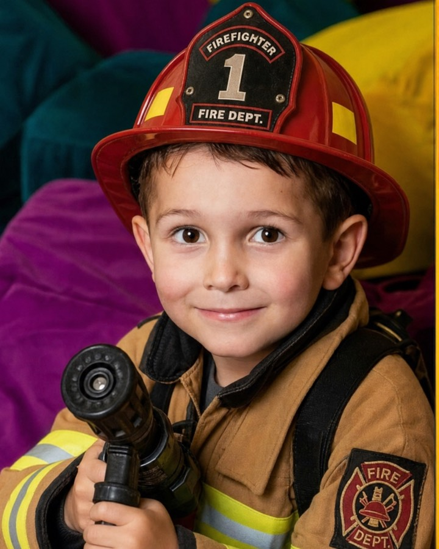
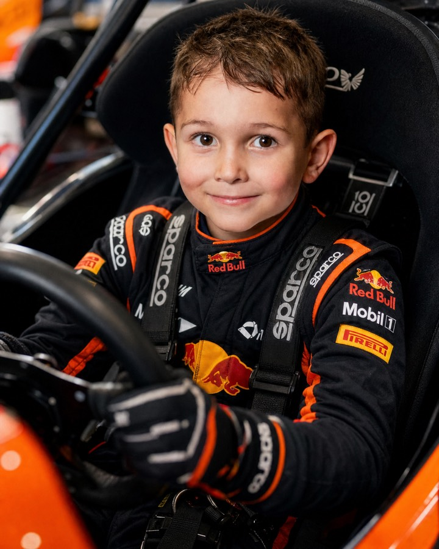
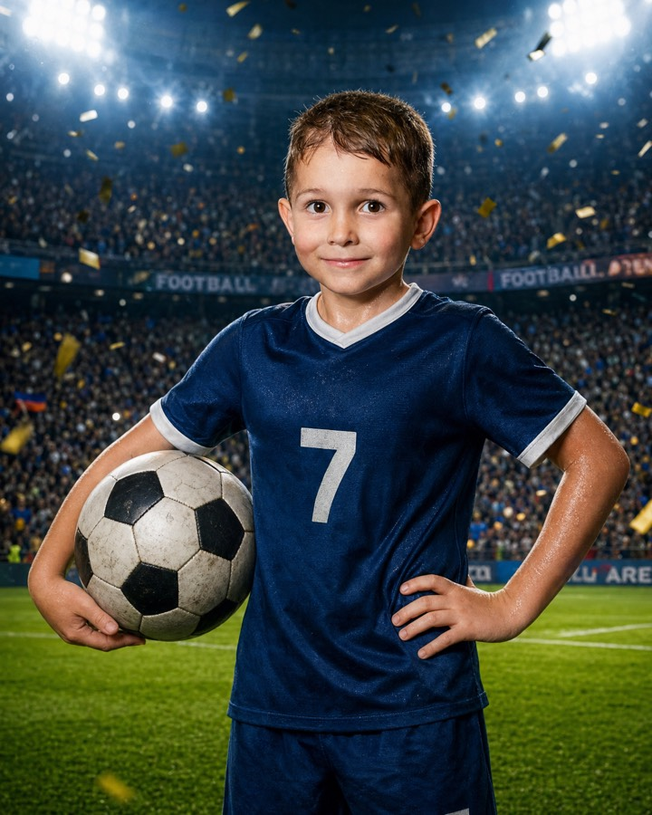
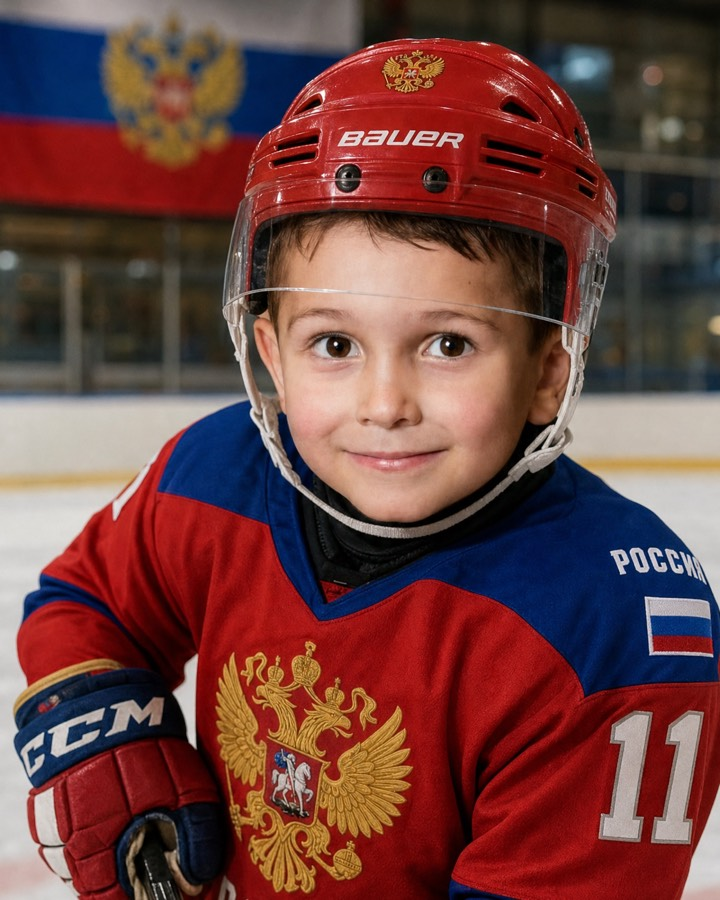
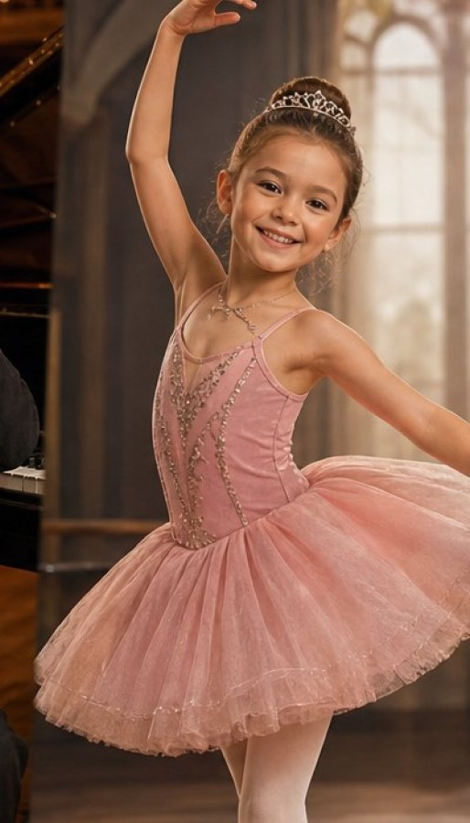
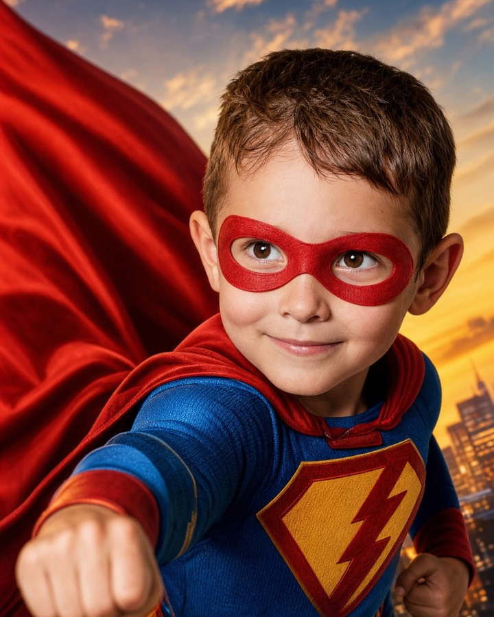
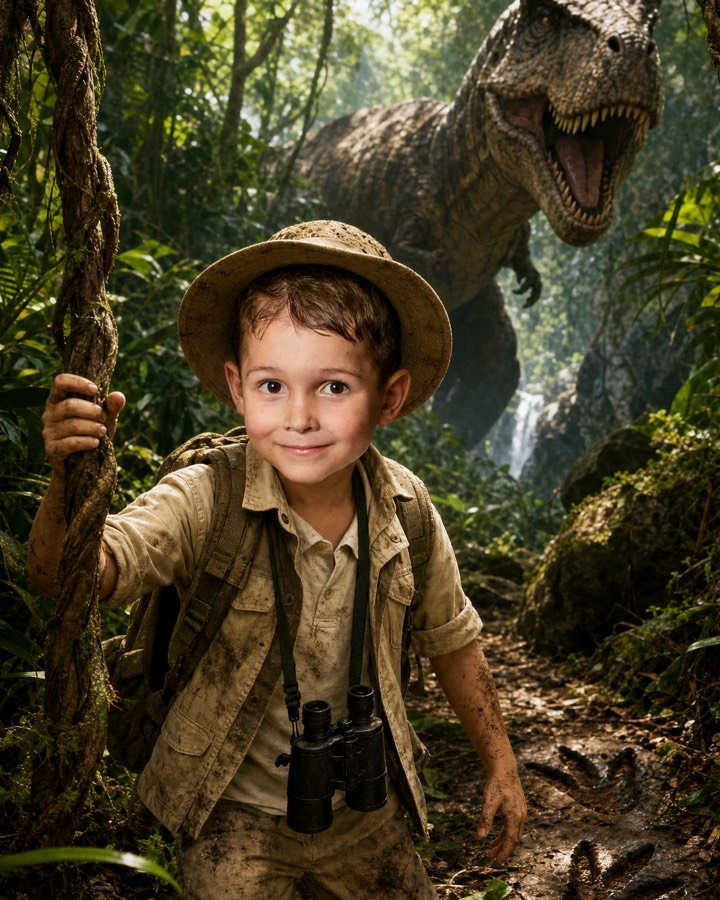

Один кадр - десять миров
Мы работаем от настоящей фотографии. Ребёнок остаётся узнаваемым: то же лицо, та же улыбка, тот же возраст. Меняются костюм, фон, свет и история вокруг. Родители видят своего ребёнка, а не нарисованного персонажа - именно поэтому такие кадры покупают.
Что меняется, а что остаётся
Остаётся ребёнок
Черты лица, пропорции, возраст, причёска, взгляд. Пресет никогда не «взрослит» и не меняет внешность: это главное требование, по которому мы принимаем или бракуем кадр.
Меняется мир
Костюм, фактуры, фон, свет, атмосфера и сюжет. Мы собираем сцену так, чтобы свет на костюме совпадал со светом на лице - иначе кадр читается как коллаж.
Космос и наука
База для музеев космонавтики, планетариев, научных парков и школьных тем года.
 Исследователь Марсакрасная пустыня, база
Исследователь Марсакрасная пустыня, база

Экипаж станциииллюминатор, вид ЗемлиПрофессии
Самый понятный набор для садов, школ и парков: ребёнок в деле, которым восхищается.

Пожарныйкаска, боевая одежда, стволСкорость и спорт
Сильно работает в детских парках и на событиях: динамика, техника, командная форма.

Гонщиккомбинезон, кокпит, боксы
Футболистформа, стадион, свет софитов
Хоккеистлёд, форма, отражения
Балеринасцена, пачка, тёплый контровойФэнтези, сказка, праздники
Собственные архетипы вместо чужих франшиз: свой герой, своя волшебная школа, свой зимний мир.

Галактический стражсвой костюм героя
Мир динозавровэкспедиция, следы, рассвет Новогодний мирснег, гирлянды, подарки
Новогодний мирснег, гирлянды, подарки
Это витрина направлений. Под конкретную площадку список пересобирается: убираем лишнее, добавляем то, что связано с вашей экспозицией или темой года.
Каким должен быть исходный кадр
Качество итогового образа на восемьдесят процентов определяется исходником. Эти пять правил мы отдаём фотографам вместе с пресетами.
Свет
Ровный портретный свет, без жёстких теней на половине лица.
Лицо
Открытое, не перекрыто руками и волосами, взгляд в камеру или чуть в сторону.
План
По пояс или по грудь. Слишком общий план теряет черты лица.
Резкость
Фокус по глазам, выдержка короче 1/200. Шевелёнку пресет не спасает.
Фон
Спокойный и однородный. Чем меньше мусора за спиной, тем чище замена мира.
Фотографу и ретушёру мы отдаём готовую библиотеку пресетов с промптами, параметрами и чек-листом отбора. Ничего придумывать на смене не нужно.
Открыть библиотеку пресетовЧего мы не делаем
Ограничения существуют не из осторожности, а потому что нарушение любого из них однажды стоит площадке репутации.
- Не воспроизводим защищённых персонажей, логотипы и символику франшиз
- Не меняем внешность ребёнка: ни черты лица, ни телосложение, ни цвет кожи
- Не делаем пугающих и травмирующих сюжетов в детских наборах
- Не используем детские фотографии для обучения моделей и рекламы без отдельного письменного согласия
- Не храним исходники дольше срока, прописанного в договоре
Позвоните - обсудим вашу площадку
Без анкет и заявок. Ответим на вопросы, посчитаем смету на пилот и, если нужно, приедем показать оборудование и снять пробную серию.
Андрей, по всем вопросам